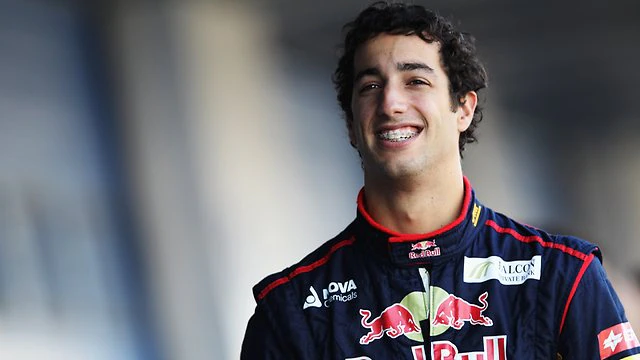
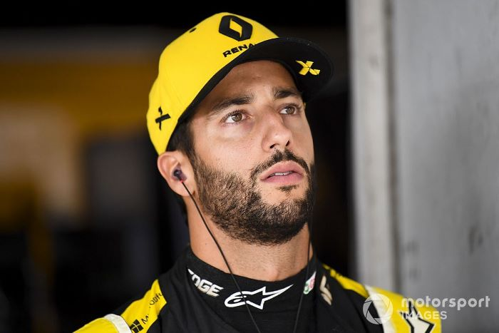

Daniel Ricciardo est un pilote de Formule 1 d'origine australienne qui
a fait ses débuts en Formule 1 en 2011 avec l'équipe HRT. Il a ensuite
rejoint l'équipe Toro Rosso avant de passer à l'équipe Red Bull Racing
en 2014, où il a remporté plusieurs courses. En 2019, Daniel Ricciardo
a rejoint l'équipe Renault en tant que pilote, où il a continué sa
carrière en Formule 1. Ses compétences de pilotage et son caractère
enjoué l'ont rendu populaire parmi les fans de sport automobile.
Saison 2011 (HRT Formula One Team) :
Daniel Ricciardo est appelé par l'équipe HRT en cours de saison
pour remplacer Narain Karthikeyan. Ces débuts ne sont pas
spectaculaires en raison des limitations de l'équipe. Le manque de
performance de la voiture limite ses opportunités de briller, mais
cette expérience lui permet d'accumuler des kilomètres précieux en
Formule 1.
En rejoignant Toro Rosso, Ricciardo obtient une chance plus
régulière de montrer son talent. Il marque ses premiers points dès
le premier Grand Prix de la saison 2012. En 2012, ses performances
montrent sa rapidité et sa constance, tandis que la saison 2013
confirme sa capacité à marquer des points régulièrement. Ces
saisons avec Toro Rosso sont cruciales pour son développement en
tant que pilote de Formule 1.

Saison 2014-2018 (Red Bull Racing) :
Le passage chez Red Bull Racing marque un tournant dans la
carrière de Ricciardo. Il remplace le vétéran Mark Webber et
prouve rapidement sa valeur.Les trois victoires en 2014, notamment
celle au Canada où il démontre un dépassement audacieux sur
Fernando Alonso, le consacrent comme un pilote de premier plan.
Terminer la saison en troisième position au championnat, devant
son coéquipier quadruple champion du monde Sebastian Vettel, est
une réalisation remarquable. La saison 2015 est plus difficile en
raison de la compétitivité réduite de Red Bull Racing. Les
résultats en termes de podiums ne sont pas aussi fréquents.Les
défis internes de l'équipe et la montée en puissance de son
coéquipier Kvyat compliquent la saison pour Ricciardo. La saison
2016 est marquée par la première pole position de Ricciardo à
Monaco et une victoire en Malaisie, démontrant sa polyvalence sur
différents circuits. Le départ de son coéquipier Vettel pour
Ferrari lui permet de devenir le pilote principal de l'équipe, et
il termine la saison en troisième position au championnat. La
saison 2017 voit Ricciardo atteindre le sommet du podium à Bakou
avec une victoire impressionnante où il réalise un triple
dépassement en une seule manœuvre.Malgré une série de podiums, une
série d'abandons en fin de saison limite ses chances de terminer
plus haut au classement. Annonce son départ de Red Bull Racing en
cours de saison, préférant explorer de nouvelles
opportunités.Terminer la saison à la 6e place au classement
confirme sa position comme l'un des meilleurs pilotes de la
grille.
Le passage chez Renault voit Ricciardo faire face à des défis avec
des abandons dus à des problèmes de moteur. Une 4e place en Italie
est la meilleure performance, mais les résultats globaux ne
reflètent pas pleinement son talent.

Daniel Ricciardo, Renault F1 Team
Succès mitigés chez McLaren
En 2021, Ricciardo rejoint McLaren, mais son adaptation est
difficile. Après une première victoire en Italie, il continue de
lutter pour des performances constantes, terminant la saison à la
8e place.
Malgré un contrat jusqu'en 2023, McLaren et Ricciardo décident de
mettre fin à leur collaboration en 2022 en raison de performances
en deçà des attentes.
Retour chez Red Bull Racing en tant que 3e Pilote
En 2023, Daniel Ricciardo retrouve Red Bull Racing en tant que 3e
pilote après la résiliation prématurée de son contrat avec
McLaren, espérant retrouver un rôle de titulaire en 2024.